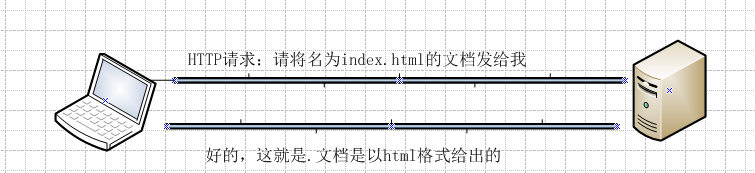
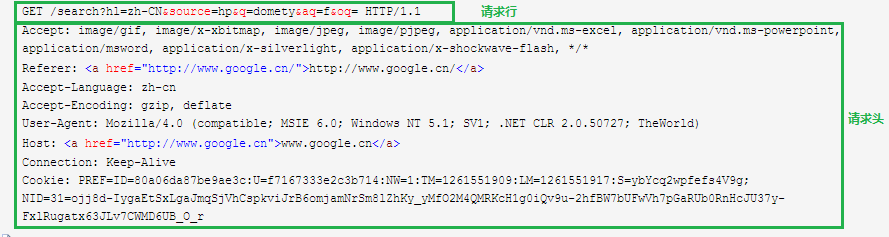
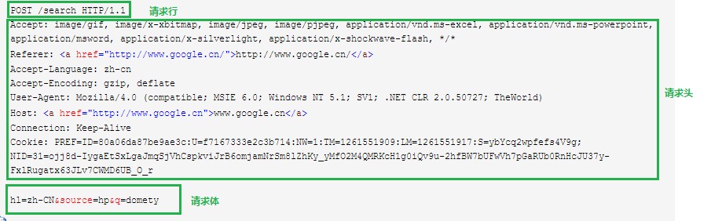
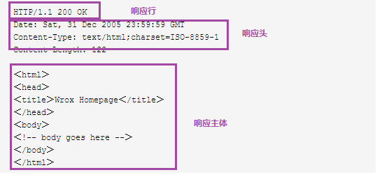

http初步理解
对很多初识网络知识的人，可能对http完全茫然，这里就按照我的理解介绍一下http是什么，以及它的基本内容。这里是笼统的比喻一下，很多细节从专业的角度都是不正确的，只是有助于没有网络知识的人去理解吧。
Http是什么？
人类交流靠声音和语言，计算机和计算机通信靠的是网络和协议，网络和协议就好像声音和语言。而Http就是众多网络协议中的一种。使用的最广泛的版本为http/1.0
计算机之间的交流
让我们按照人类交流的方式想象一下计算机的世界是如何交流的
1、首先，我们每个人都有身份证号码，通过这个号码能定位到唯一的一个人。那么计算机也是一样的，每台计算机在互联网上都有一个唯一的地址，即ip地址。
2、然后，我们都有自己的母语，同一个国家的人能用母语交流，为了让世界上的人都能进行交流，人们又将英语定为了世界语言，现在世界各地的人都能用英语交流了。互联网内的计算机也一样，他们也有自己的语言进行交流，这就是http协议。
3、英语会有语法、单词、音标等这些定义好的规则，这样人们才能互相知道对方在讲什么，而http也是有一系列的规则在里边，这样计算机才能知道对方在传送什么信息。
Http如何工作
围绕以上三点：唯一地址、语言、规则，我们就能简单的分析一下http的工作流程了。设想一个场景，有一个学生想要找老师请教一个问题，故事开始了：
1、客户端（发起通信请求的称为客户端，这里代表的是学生）首先发起一个http请求。请求中包含了对方的地址和请求的一些条件，这些都存储在http请求头里。
这句话的意思就是学生给老师打了一个电话，问了老师一个关于宇宙的概念。
2、服务器端（接收请求的称为服务器，这里代表的是老师）接收到请求后，开始包装返回信息，包装完毕后将这些信息又发回给客户端。
老师通过电话听到了这个问题，开始在大脑里组织语言，组织完毕后告诉学生“宇宙是地球的母亲，宇宙有很多很多数不清的孩子”
3、客户端接收到请求后，按照自己的需要去做处理，比如交给浏览器展示出来，或者自己默默地什么也不做。
学生听到了宇宙的概念，在脑海中想像了宇宙浩瀚无边的画面，挂掉了电话。

以上请求看着非常简单，实际上里边有很多细节才是我们需要深究和了解的，比如http请求中都包含哪些可以请求的类型，通过什么规则去请求等，下边介绍一下这些规则里都有哪些东西。
问题一、客户端都放置哪些信息在请求报文中？
1、URL
URL是服务器端资源的唯一标识符，通过这个标识符就能找到服务器，URL由三部分组成：协议 服务器 服务器资源，我们讲的是http协议，所以第一个部分显然是http，第二个部分是服务器的域名或者ip地址，第三个部分是具体资源的名称或路径，比如http://www.bing.com/index.html，三个部分的连接符分别为://和/。
2、http方法
http支持几种不同的请求命令，这些命令被称为http方法，这个方法会告诉服务器执行什么动作。五种常见的方法：Get（向客户端发送资源）、Put（创建或者更新服务器资源）、Delete（删除服务器端指定资源）、Post（创建或者更新服务器资源）、Head（仅发送http首部回去）
这里的put和post总是会被混淆如何用，遵循这个规则—>这篇文章介绍的很好（幂等的意思：对于两个参数，如果传入值相等，结果也等于每个传入值，则称其为幂等的，如min(a,b)）
3、其他
编码、语言、cookie等


问题二、服务器都放置哪些信息到响应中
1、状态
该条请求的状态码，常见的200、302（重定向）、404。200到206表示成功，300到305表示重定向，400到415表示客户端错误，500到505表示服务器错误
2、响应内容
3、其他
编码、语言、长度

Http连接如何建立起来
Http是应用层协议，网络通信的细节他无需关心，而是由TCP/IP负责的。TCP/IP隐藏了各种网络和硬件的特点及弱点，使各种类型的硬件都能够进行可靠的通信。只要建立了TCP连接，客户端和服务端的报文就不会丢失。
下面是浏览器请求Http连接的步骤：
1、浏览器从URL中解析出服务器的主机名
2、浏览器将服务器的主机名转换为服务器的Ip地址（通过DNS）
3、浏览器解析URL中的端口号
4、浏览器建立一条与Web服务器的TCP连接
5、浏览器向服务器发送一条HTTP请求报文
6、服务器向浏览器返回一条HTTP响应报文
7、关闭连接，浏览器显示文档
Comments